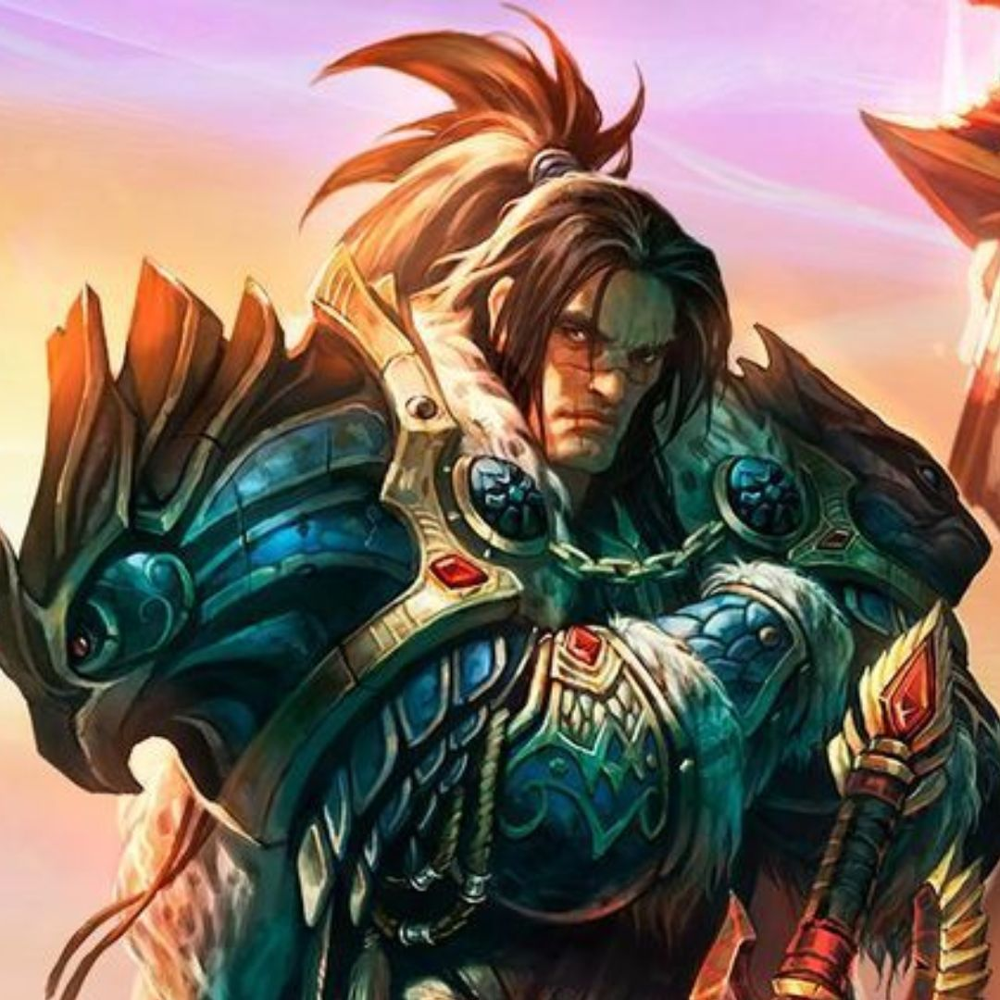
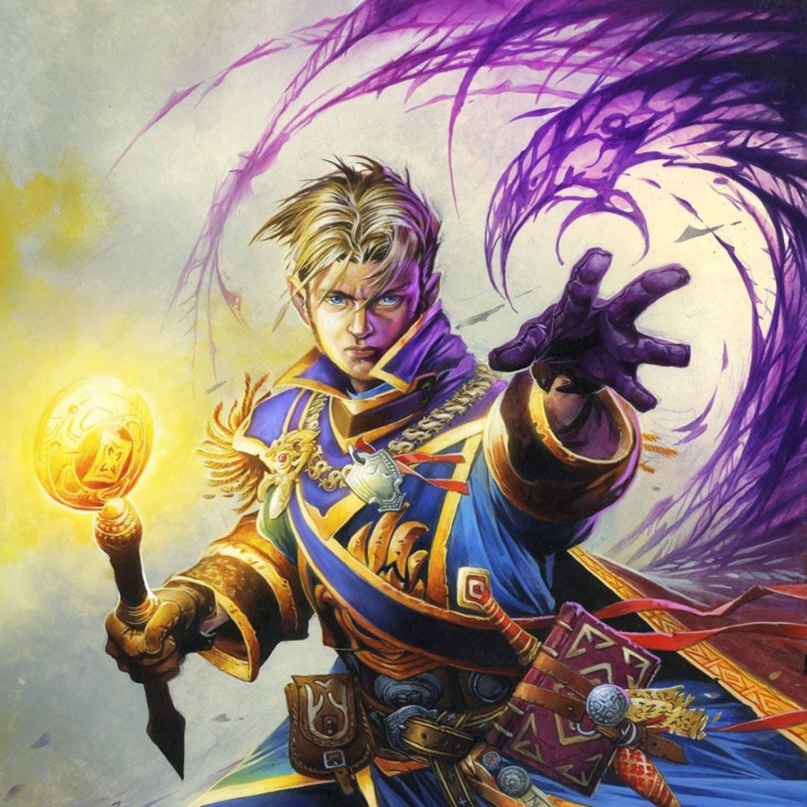

Hurlevent, la majestueuse capitale de l'Alliance, incarne la grandeur et la résilience. Nichée dans la région d'Elwynn, cette cité rayonne de raffinement et d'ordre. Avec ses hautes tours, ses jardins soignés et sa riche histoire, Hurlevent symbolise l'alliance des différentes races qui la composent. C'est un endroit où la diversité se transforme en force, une forteresse de la lumière et du courage.
Plongez dans l'histoire du Roi de l'Alliance, un dirigeant emblématique qui symbolise l'unité et la résilience des différentes races de l'Alliance. Porteur de la couronne, le Roi est chargé de défendre Hurlevent et de guider son peuple vers un avenir prospère. Découvrez son rôle essentiel, ses accomplissements et l'influence qu'il a exercée sur l'Alliance et sur Azeroth elle-même.
| Noms | Hauts faits | Durée | Puissance | |
|---|---|---|---|---|
|  | Varian | Reconquête de Hurlevent | De 26 à 27, ~1ans (enlevement) De 27 à 32, ~5ans (retour) |
??? |
|  | Anduin | Leadership pendant la Quatrième Guerre | De 32 à 45, ~13ans | Boss |